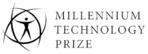
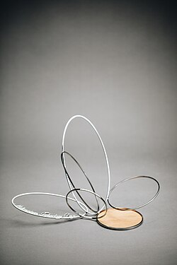

| The Millennium Technology Prize | |
|---|---|
 | |
| Awarded for | Life-enhancing technological innovation |
| Country | Finland |
| Presented by | Technology Academy Finland |
| Reward | €1 million |
| First award | 2004 |
| Website | millenniumprize |
{kind=link}
{kind=link}

The Millennium Technology Prize (Finnish: Millennium-teknologiapalkinto) is one of the world's largest technology prizes.[1][2][3] It is awarded once every two years by Technology Academy Finland, an independent foundation established by Finnish industries, academic institutions, and the state of Finland. The patron of the prize is the President of Finland. The Millennium Technology Prize is Finland's tribute to innovations for a better life. The aims of the prize are to promote technological research and Finland as a high-tech Nordic welfare state. The prize was inaugurated in 2004.[2]
The Prize
The idea of the prize came originally from the Finnish academician Pekka Jauho, with American real estate investor and philanthropist Arthur J Collingsworth encouraging its establishment.[4] The Prize celebrates innovations that have a favorable and sustainable impact on quality of life and well-being of people.[5] The innovations also must have been applied in practice and stimulate further research and development.[5] Compared to the Nobel Prize the Millennium Technology Prize is a technology award, whereas the Nobel Prize is a science award.[2] Furthermore, the Nobel Prize is awarded for basic research, but the Millennium Technology Prize may be given to a recently conceived innovation which is still being developed. The Millennium Technology Prize is not intended as a reward for lifetime achievement.[5]
The Millennium Technology Prize is awarded by Technology Academy Finland (formerly Millennium Prize Foundation and Finnish Technology Award Foundation), established in 2002 by eight Finnish organisations supporting technological development and innovation. The prize sum is 1 million euros (~US$1.3 million).[5] The Millennium Technology Prize is awarded every second year[5] and its patron is the president of Finland.[6]
Universities, research institutes, national scientific and engineering academies, high-tech companies, and other organizations around the world are eligible to nominate individuals or groups for the award. Nominations are accepted from any field except military technology.[5] In accordance with the rules of the Technology Academy Finland, a proposal concerning the winner of the Millennium Technology Prize is made to the board of the foundation by the eight-member international selection committee, and the final decision on the prize winner is made by the board of the foundation.
International Selection Committee (ISC)
Current members of the selection committee include:[7]
- Päivi Törmä, Professor at Aalto University and Chairman of ISC 2017-2024.
- Nigel Brandon, Dean of the Faculty of Engineering at Imperial College London
- Thierry E. Klein, President of Bell Labs Solutions Research at Nokia Bell Labs
- Ilan Spillinger, Executive Vice President and Corporate CTO of IMEC.
- Sirpa Jalkanen, Professor of Immunology at University of Turku
- Cecilia Tortajada, Professor in Practice in Environmental Innovation (Interdisciplinary Studies) in the University of Glasgow
Past committee members include:
- Jonathan Knowles, Visiting Professor, FIMM, HiLIFE, University of Helsinki, Finland
- Tero Ojanperä, Chairman of Silo.AI company
- Jarl-Thure Eriksson, Chancellor of Åbo Akademi University and former Rector of Tampere University of Technology (Finland)
- Eva-Mari Aro, Professor in Molecular Plant Biology at University of Turku (Finland)
- Jaakko Astola, Professor of Signal Processing at Tampere University of Technology (Finland)
- Craig R. Barrett, Retired CEO/Chairman of the Board of Intel Corporation (United States)
- Riitta Hari, Director of both the multidisciplinary Brain Research Unit of the Low Temperature Laboratory at Aalto University and the national Centre of Excellence on Systems Neuroscience and Neuroimaging Research (Finland)
- Konrad Osterwalder, Former Rector of the United Nations University and Under-Secretary-General of the United Nations (Switzerland)
- Ayao Tsuge, President of the Japan Federation of Engineering Society and President of Japan International Science and Technology Exchange Center (Japan)
Laureates
| Year | Inventor | Nationality | Invention | Notes |
|---|---|---|---|---|
| 2004 | Tim Berners-Lee | World Wide Web | Inventor of the World Wide Web from United Kingdom, was announced on 15 April 2004, as the first winner of the award. The Prize was presented to Berners-Lee at a ceremony in the Finlandia Hall in Helsinki by the President of Finland, Tarja Halonen on 15 June 2004. Selection committee studied 78 nominations from 22 countries for the 2004 prize. | |
| 2006 | Shuji Nakamura | Japan (born) United States (citizen) |
Blue and white LEDs | Inventor of high brightness blue and white LEDs used in lighting, computer displays and new-generation DVDs, from California, United States, was announced on 15 June 2006, as the second winner of the award.[8] The Prize was presented to Nakamura at a ceremony in the Helsinki Fair Centre in Helsinki by the President of Finland Tarja Halonen on 8 September 2006. Selection committee studied 109 nominations from 32 countries for the 2006 prize. |
| 2008 | Robert Langer (Grand Award winner) | United States | Innovative biomaterials for controlled drug release and tissue regeneration | Inventor of controlled drug release from the United States, was announced on 11 June 2008, as the third winner of the award. The prize 800,000 euros was presented to Langer at a ceremony in Helsinki by the President of Finland Tarja Halonen "for his invention and development of innovative biomaterials for controlled drug release and tissue regeneration that have saved human lives and improved the lives of millions of patients."[9] |
| Alec Jeffreys (finalist and laureate) | DNA fingerprinting technique | Committee's reasoning: "the DNA fingerprinting technique developed by Professor Sir Alec Jeffreys has revolutionized the field of forensic science and methods of defining family relationships." Professor Sir Alec Jeffreys was awarded a prize of 115,000 euros.[10] | ||
| Andrew Viterbi (finalist and laureate) | Italy (born) United States (citizen) |
Viterbi algorithm | Committee's reasoning: "Dr. Andrew Viterbi's innovation is the Viterbi algorithm, used to avoid errors in wireless communications systems and devices such as mobile phones." Dr. Andrew Viterbi was awarded a prize of 115,000 euros.[10] | |
| Emmanuel Desurvire (finalist and laureate) | Erbium doped fiber amplifier | Committee's reasoning: "The fourth innovation awarded, the erbium-doped fibre amplifier (EDFA) invented by Professor Emmanuel Desurvire, Dr. Randy Giles and Professor David Payne, has vastly increased the transmission capacity of the global optical fibre networks that carry telephone and Internet communications signals." The group was awarded a prize of 115,000 euros.[10] | ||
| Randy Giles (finalist and laureate) | United States | |||
| David N. Payne (finalist and laureate) | ||||
| 2010 | Michael Grätzel (Grand Award winner) | Switzerland | Dye-sensitized solar cells | Inventor of third generation dye-sensitized solar cells. The president of Finland Tarja Halonen handed the 800,000 euros Grand Prize and the prize trophy "Peak" to Grätzel at the Grand Award Ceremony at the Finnish National Opera in Helsinki on 9 June 2010.[11] |
| Richard Friend (finalist and laureate) | organic light-emitting diodes | Committee's reasoning: "The initial innovation of Professor Sir Richard Friend, organic Light Emitting Diodes (LEDs), was a crucial milestone in plastic electronics. Electronic paper, cheap organic solar cells and illuminating wall paper are examples of the revolutionary future products his work has made possible." Professor Sir Richard Friend was awarded a prize of 150,000 euros.[11] | ||
| Stephen Furber (finalist and laureate) | ARM 32-bit RISC microprocessor | Committee's reasoning: "Stephen Furber is the principal designer of the ARM 32-bit RISC microprocessor, an innovation that revolutionised mobile electronics. The ingeniously designed processor enabled the development of cheap, powerful handheld, battery-operated devices. In the past 25 years nearly 20 billion ARM based chips have been manufactured." Professor Stephen Furber was awarded a prize of 150,000 euros.[11] | ||
| 2012 | Linus Torvalds | Finland (born) United States (citizen) |
Linux kernel | Committee's reasoning: "for creating the Linux kernel, a new open source operating system for computers. 73,000 man years have been spent fine-tuning the code. Today millions use computers, smartphones and digital video recorders that run on Linux. Linus Torvalds's achievements have had a great impact on shared software development, networking and the openness of the web."[10] |
| Shinya Yamanaka | Japan | Induced pluripotent stem cell | Committee's reasoning: "in recognition of his discovery of a new method to develop induced pluripotent stem cells for medical research. Using his method to create stem cells, scientists all over the world are making great strides in research in medical drug testing and biotechnology. This should one day lead to the successful growth of implant tissues for clinical surgery and combating intractable diseases such as cancer, diabetes and Alzheimer's."[10] | |
| 2014 | Stuart Parkin | Advances in magnetic storage capacity | Committee's reasoning: "in recognition of his discoveries, which have enabled a thousand-fold increase in the storage capacity of magnetic disk drives. Parkin's innovations have led to a huge expansion of data acquisition and storage capacities, which in turn have underpinned the evolution of large data centres and cloud services, social networks, music and film distribution online."[12] | |
| 2016 | Frances Arnold | United States | Directed evolution | Committee's reasoning: "in recognition of her discoveries that launched the field of ‘directed evolution’, which mimics natural evolution to create new and better proteins in the laboratory. This technology uses the power of biology and evolution to solve many important problems, often replacing less efficient and sometimes harmful technologies. Thanks to directed evolution, sustainable development and clean technology become available in many areas of industry that no longer have to rely on non-renewable raw materials."[13] |
| 2018 | Tuomo Suntola | Finland | Atomic layer deposition | Committee's reasoning: "Suntola's prize-winning ALD (atomic layer deposition) innovation is a nanoscale technology in use all over the world. ALD is used to manufacture ultra-thin material layers for microprocessors and digital memory devices. The technology allows building of complex, three-dimensional structures one atomic layer at a time. The extremely thin isolating or conducting films needed in microprocessors and computer memory devices can only be manufactured using the ALD technology developed by Tuomo Suntola."[14] |
| 2020* | Shankar Balasubramanian & David Klenerman | India (born) |
Next Generation DNA Sequencing | Committee's reasoning: "Professors Shankar Balasubramanian and David Klenerman received the 2020 Millennium Technology Prize for their innovation of Next Generation DNA Sequencing (NGS), technology that enables fast, accurate, low-cost and large-scale genome sequencing – the process of determining the complete DNA sequence of an organism’s make-up. The innovation has enhanced our basic understanding of life and it has converted biosciences into “big science”.."[15] |
| 2022 | Martin Green[16] | Passivated Emitter and Rear Cell (PERC) | The Prize was presented to Green at a ceremony in Helsinki by the President of Finland, Sauli Niinistö on 25 October 2022. | |
| 2024 | B. Jayant Baliga[17] | India (born) United States (citizen) |
Insulated-gate bipolar transistor (IGBT) | Committee's reasoning: "for his innovation that has enabled dramatic reduction in worldwide electrical energy and petrol consumption."[18] |
*The ceremony was postponed due to the COVID-19 pandemic, and was held on 18 May 2021.
See also
- Harvey Prize
- IMU Abacus Medal
- Japan Prize
- Kyoto Prize
- Nobel Prize
- Schock Prize
- Shaw Prize
- Tang Prize
- ACM Turing Award
- IET Faraday Medal
- IEEE Medal of Honor
- Queen Elizabeth Prize for Engineering
- List of engineering awards
References
- ^ Shannon, Victoria (14 June 2004). "Pioneer Who Kept the Web Free Honored With a Technology Prize". The New York Times. Archived from the original on 10 October 2015. Retrieved 10 April 2014.
Mr. Berners-Lee will finally be recognized, with the award of the world's largest technology prize, the Millennium Technology Prize from the Finnish Technology Award Foundation
- ^ a b c "Top prize for 'light' inventor". BBC News. 8 September 2006. Archived from the original on 5 March 2007. Retrieved 10 April 2014.
The Millennium Technology Prize is the world's largest technology award, equivalent to the Nobel Prizes for science
- ^ "Shuji Nakamura, inventor of bright LED lights, gets Millennium Prize". Helsingin Sanomat. 16 June 2006. Archived from the original on 13 April 2014. Retrieved 10 April 2014.
It is the world's largest prize for technology
- ^ "Finnfacts - English - Actualities". finnfacts.com. Archived from the original on 18 November 2008. Retrieved 27 June 2025.
- ^ a b c d e f "Millennium Technology Prize". Technology Academy Finland. Archived from the original on 19 August 2014. Retrieved 10 April 2014.
- ^ "'Big data' pioneer wins Millennium Technology Prize". Yle Uutiset. 9 April 2014. Retrieved 10 April 2014.
- ^ "International Selection Committee". Millennium Technology Prize. Archived from the original on 28 September 2023. Retrieved 14 September 2023.
- ^ Paul Desruisseaux (15 June 2006). "2006 Millennium Technology Prize Awarded to UCSB's Shuji Nakamura". University of California, Santa Barbara. Archived from the original on 9 March 2020. Retrieved 5 April 2020.
- ^ "2008 Millennium Technology Prize awarded to Professor Robert Langer for intelligent drug delivery" (Press release). University of Leicester. 11 June 2008. Archived from the original on 13 April 2014. Retrieved 10 April 2014.
- ^ a b c d e "Stem cell scientist and open source software engineer are named joint winners of the 2012 Millennium Technology Prize" (Press release). Technology Academy Finland. 13 June 2012. Archived from the original on 13 April 2014. Retrieved 10 April 2014.
- ^ a b c "The Millennium Technology Prize: PROFESSOR GRÄTZEL WINS THE 2010 MILLENNIUM TECHNOLOGY GRAND PRIZE FOR DYE-SENSITIZED SOLAR CELLS". Technology Academy Finland. 6 June 2010. Archived from the original on 12 October 2011. Retrieved 10 April 2014.
- ^ "Physicist Stuart Parkin wins 2014 Millennium Technology Prize for opening big data era" (Press release). Technology Academy Finland. 9 April 2014. Archived from the original on 2 September 2014. Retrieved 10 April 2014.
- ^ "Biochemical engineer Frances Arnold wins 2016 Millennium Technology Prize for 'directed evolution' revolution"" (Press release). Archived from the original on 30 May 2016. Retrieved 24 May 2016.
- ^ "2018 Millennium Technology Prize for Tuomo Suntola – Finnish physicist's innovation enables manufacture and development of information technology products"" (Press release). Archived from the original on 23 May 2018. Retrieved 22 May 2018.
- ^ "2020 Next Generation DNA Sequencing"" (Press release). Archived from the original on 19 May 2021. Retrieved 18 May 2021.
- ^ Templeton, Louise (26 October 2022). "UNSW Sydney solar pioneer wins Europe's biggest technology innovation prize". UNSW Newsroom. Archived from the original on 16 February 2023. Retrieved 25 October 2022.
- ^ Chowdhury, Hasan (5 September 2024). "Meet the professor who just won the Millennium Technology Prize — and $1.1 million". Business Insider. Archived from the original on 21 September 2024. Retrieved 21 September 2024.
- ^ "2024 Revolutionizing global electrification" (Press release). Millennium Technology Prize. Archived from the original on 18 September 2024. Retrieved 21 September 2024.
External links
- The Millennium Technology Prize - Official site
- The Millennium Technology Prize Youtube Channel
- Technology Academy Finland - Official site